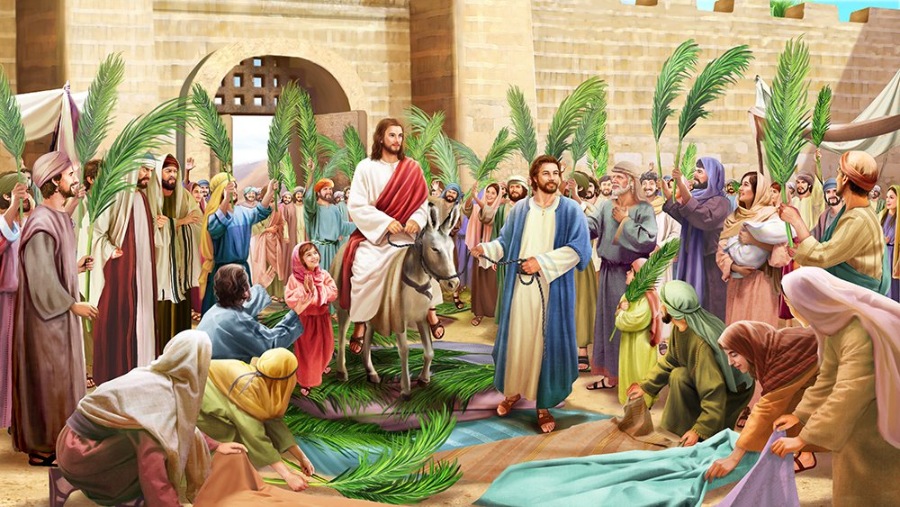

Palm Sunday
Palm Sunday
പ്രാരംഭ ഗീതം
ഓര്ശ്ശേംനഗരത്തിന്, വാതില് തുറക്കുന്നു.
ഒലിവിന് ശിഖിരങ്ങള്, കൈകളിലുയരുന്നു
ഓശാനകളാല് വഴിയെല്ലാം, മുഖരിതമാകുന്നു.
രാജമഹേശ്വരനാം, മിശിഹായണയുന്നു,
കഴുതക്കുട്ടിയതാ, വാഹനമാകുന്നു
തെരുവോരങ്ങളില് ജയ് വിളികൾ
മാറ്റൊലി തീര്ക്കുന്നു.
വാനവരോടൊപ്പം, പാടാം ഓശാന
വിനയാന്വിതരായ് നാം, നാഥനു സ്തുതിപാടാം.
സ്വര്ഗ മനോഹര ഭവനത്തില്
ചേര്ക്കുക ഞങ്ങളെയും.
പാതകള് തോറും വെണ്, പട്ടുവിരിപ്പുകളും
സൈത്തിന് കൊമ്പുകളും, നിന്നെതിരേൽപ്പിനായ്
അന്നുവിരിച്ചതു പോല് ഹൃദയം
ഞങ്ങള് വിരിച്ചീടാം.
സ്നേഹത്തിന്റെ കല്പന
(യോഹ. 13:34-35)
കാര്മ്മി: അന്നാപെസഹാത്തിരുനാളില്
കര്ത്താവരുളിയ കല്പനപോല്
തിരുനാമത്തില് ച്ചേര്ന്നീടാം
ഒരുമയോടി ബലിയര്പ്പിക്കാം.
സമുഹം: അനുരഞ്ജിതരായ് തീര്ന്നീടാം
നവമൊരു പീഠമൊരുക്കീടാം
ഗുരുവിന് സ്നേഹമൊടീയാഗം
തിരുമുമ്പാകെയണച്ചീടാം.
മാലാഖമാരുടെ കീര്ത്തനം
(ലൂക്കാ 2:14)
കാര്മ്മി: അത്യുന്നതങ്ങളിൽ ദൈവത്തിനു സ്തൂതി.
സമൂഹം: ആമ്മേന്.
കാര്മ്മി: ഭൂമിയില് മനുഷ്യര്ക്കു സമാധാനവും പ്രത്യാശയും എപ്പോഴും എന്നേക്കും.
സമൂഹം: ആമ്മേന്.
(പകരം ഗാനം)
കാര്മ്മി: അത്യുന്നതമാം സ്വര്ല്ലോകത്തില് സര്വ്വേശനു സ്തൂതി ഗീതം.
സമൂഹം: ഭൂമിയിലെങ്ങും മര്ത്യനു ശാന്തി പ്രത്യാശയു മെന്നേക്കും.
കാര്മ്മി: സ്വര്ഗ്ഗസ്ഥനായ ഞങ്ങളുടെ പിതാവേ (സമൂഹവും ചേർന്ന്) അങ്ങയുടെ നാമം പൂജിതമാകണമെ / അങ്ങയുടെ രാജ്യം വരണമെ. അങ്ങയുടെ തിരുമനസ്സു സ്വര്ഗ്ഗത്തിലെപ്പോലെ ഭൂമിയിലുമാകണമെ. ഞങ്ങള്ക്കു ആവശ്യകമായ ആഹാരം / ഇന്നു ഞങ്ങള്ക്കു തരണമെ. ഞങ്ങളൂടെ കടക്കാരോടു ഞങ്ങള് ക്ഷമിച്ചിരിക്കുന്നതുപോലെ, ഞങ്ങളുടെ കടങ്ങളും പാപങ്ങളും ഞങ്ങളോടു ക്ഷമിക്കണമെ. ഞങ്ങളെ പ്രലോഭനത്തില് ഉള്പ്പെടുത്തരുതെ. ദുഷ്ടാരൂപിയില്നിന്നു ഞങ്ങളെ രക്ഷിക്കണമെ. എന്തുകൊണ്ടെന്നാല് /രാജ്യവും ശക്തിയും മഹത്വവും എന്നേക്കും അങ്ങയുടേതാകുന്നു. ആമ്മേന്.
സ്വര്ഗ്ഗസ്ഥനായ ഞങ്ങളുടെ പിതാവേ / അങ്ങയുടെ മഹത്വത്താല് സ്വര്ഗ്ഗവും ഭൂമിയും നിറഞ്ഞിരിക്കുന്നു / മാലാഖമാരും മനുഷ്യരും അങ്ങു പരിശുദ്ധന് പരിശുദ്ധന് പരിശുദ്ധന് എന്ന് ഉല്ഘോഷിക്കുന്നു.
ശുശ്രൂഷി: നമുക്കു പ്രാര്ത്ഥിക്കാം; സമാധാനം നമ്മോടുകൂടെ.
പ്രാരംഭ പ്രാര്ത്ഥന
കാര്മ്മി: മഹത്ത്വത്തിന്റെ രാജാവായ മിശിഹായേ, വിനീതനായി കഴുതക്കുട്ടിയുടെ പുറത്ത് ജറുസലെം ദൈവാലയത്തിലേക്ക് എഴുന്നള്ളിയ നിന്നെ ഞങ്ങള് ആരാധിക്കുന്നു. നീതിമാനും പ്രതാപവാനുമായ രാജാവേ, നിനക്ക് ഓശാന പാടിയ സിയോന് മക്കളുടെ കീര്ത്തനങ്ങളോടുകൂടി ഞങ്ങളൂടെ പ്രാര്ത്ഥനകളും സ്തുതിഗീതങ്ങളും സ്വീകരിക്കണമേ. ഓശാനപാടി നിന്നെ എതിരേറ്റ ജനങ്ങളെപ്പോലെ, സ്തുതിഗീതങ്ങൾ ആലപിച്ചുകൊണ്ട് നിന്നെ എതിരേല്ക്കുവാന് ഞങ്ങളെ യോഗ്യരാക്കണമേ. നിന്റെ സഹനത്തിലും മരണത്തിലും ഉത്ഥാനത്തിലും പങ്കുചേര്ന്ന് ഈ പെസഹാ രഹസ്യങ്ങള് അനുഷ്ഠിക്കുവാന് ഞങ്ങളെ അനുഗ്രഹിക്കുകയും ചെയ്യണമേ. സകലത്തിന്റെയും നാഥാ, എന്നേക്കും.
സമൂഹം: ആമ്മേന്.
സങ്കീര്ത്തനമാല
സങ്കീര്ത്തനം 100
(ഗാനം - രീതി: കർത്താവേ മമ രാജാവേ... )
വിനയാന്വിതനായ് ദൈവസുതന്
ഓര്ശ്ശേംനഗരം പൂകുകയായ്
ജനനിരയെല്ലാമാഹ്ലാദം
നിറയും മനമോടെതിരേറ്റു.
ഭൂവാസികളെ, വന്നിടുവിന്
സ്തൂതി ഗീതങ്ങള് പാടിടുവിൻ
ഗാനാലാപന നാദങ്ങള്
ഗഗനം മുഖരിതമാക്കട്ടെ
തിരുമുറ്റത്തേക്കണയുക നാം
നന്ദിയോടങ്ങയെ വാഴ്ത്തിടുവാൻ
കരുണാമയനാം സകലേശന്
നിരുപമനെന്നും വിശ്വസ്തൻ
താതനുമതുപോലാത്മജനും
റൂഹായ്ക്കും സ്തൂതി എന്നേക്കും
ആദിമുതല്ക്കെന്നതുപോലെ
ആമ്മേന് ആമ്മേനനവരതം
വിനയാന്വിതനായ് ദൈവസുതന്
ഓര്ശ്ശേംനഗരം പൂകുകയായ്
ജനനിരയെല്ലാമാഹ്ലാദം
നിറയും മനമോടെതിരേറ്റു.
സങ്കീർത്തനത്തിനു ശേഷം
(കാർമ്മികൻ ധൂപം ആശീർവ്വദിക്കുന്നു.)
കാര്മ്മി: പിതാവും പുത്രനും പരിശുദ്ധാത്മാവുമായ സര്വ്വേശ്വരാ / അങ്ങയുടെ ബഹുമാനത്തിനായി ഞങ്ങള് സമര്പ്പിക്കുന്ന ഈ ധൂപം / അങ്ങയുടെ മഹനീയത്രിത്വത്തിന്റെ നാമത്തില് + ആശീർവദിക്കപ്പെടട്ടെ. ഇത് അങ്ങയുടെ പ്രസാദത്തിനും / അങ്ങയുടെ അജഗണത്തിന്റെ പാപങ്ങളുടെ മോചനത്തിനും കാരണമാകട്ടെ എന്നേക്കും.
സമൂഹം: ആമ്മേന്.
കാര്മ്മി: ഞങ്ങളുടെ കര്ത്താവായ ദൈവമേ, അങ്ങു നല്കിയിട്ടുള്ളതും എന്നാല് കൃതജ്ഞത പ്രകാശിപ്പിക്കുവാന് ഞങ്ങള്ക്കു കഴിയാത്തതുമായ / എല്ലാ സഹായങ്ങള്ക്കും അനുഗ്രഹങ്ങള്ക്കുമായി / സകല സൗഭാഗ്യങ്ങളും നന്മകളും നിറഞ്ഞു മുടിചൂടിനില്ക്കുന്ന സഭയില് / ഞങ്ങള് അങ്ങയെ നിരന്തരം സ്തുതിക്കുകയും മഹത്വപ്പെടുത്തുകയും ചെയ്യട്ടെ. അങ്ങു സകലത്തിന്റെയും നാഥനും സൃഷ്ടാവുമാകുന്നു / പിതാവും പുത്രനും പരിശുദ്ധാത്മാവുമായ സര്വ്വേശ്വരാ എന്നേക്കും.
സമൂഹം: ആമ്മേന്.
(മദുബഹയുടെ വിരിനീക്കുന്നു. ശുശ്രൂഷി മദുബഹയിൽ പ്രവേശിച്ച് ധൂപിക്കുന്നു.)
(ഉത്ഥാന ഗീതം)
(എല്ലാവരും അൾത്താരയിലേക്ക് തിരിഞ്ഞു ശിരസ്സു നമിക്കുന്നു)
സര്വ്വാധിപനാം കര്ത്താവേ
നിന്നെ വണങ്ങി നമിക്കുന്നു
ഈശോ നാഥാ വിനയമൊടെ
നിന്നെ നമിച്ചു പുകഴ്ത്തുന്നു.
മര്ത്യനു നിത്യമഹോന്നതമാ
മുത്ഥാനം നീയരുളൂന്നു
അക്ഷയമവനുടെ ആത്മാവി
ന്നുത്തമരക്ഷയുമേകുന്നു.
ശുശ്രൂഷി: നമുക്കു പ്രാര്ത്ഥിക്കാം; സമാധാനം നമ്മോടുകൂടെ.
(കാർമ്മികൻ ജനങ്ങൾക്ക് നേരെ തിരിഞ്ഞ്)
കാര്മ്മി: എന്റെ കര്ത്താവേ നീ സത്യമായും ഞങ്ങളുടെ ശരീരങ്ങളെ ഉയര്പ്പിക്കുന്നവനും / ആത്മാക്കളെ രക്ഷിക്കുന്നവനും / ജീവനെ നിത്യം പരിപാലിക്കുന്നവനുമാകുന്നു. ഞങ്ങള് എപ്പോഴും നിനക്കു സ്തുതിയും കൃതജ്ഞതയും ആരാധനയും സമര്പ്പിക്കുവാന് കടപ്പെട്ടവരാകുന്നു / സകലത്തിന്റെയും നാഥാ എന്നേക്കും.
സമൂഹം: ആമ്മേന്.
ത്രൈശുദ്ധ കീര്ത്തനം
ശബ്ദമുയര്ത്തിപ്പാടിടുവിന്
സര്വ്വരുമൊന്നായ് പാടിടുവിൻ
എന്നെന്നും ജീവിക്കും
സര്വ്വേശ്വരനെ വാഴ്ത്തിടുവിൻ
പരിപാവനനാം സര്വ്വേശാ
പരിപാവനനാം ബലവാനേ
പരിപാവനനാം അമര്ത്യനേ
നിന്കൃപ ഞങ്ങള്ക്കേകണമേ.
ശുശ്രൂഷി: നമുക്കു പ്രാര്ത്ഥിക്കാം; സമാധാനം നമ്മോടുകൂടെ.
കാര്മ്മി: വിശുദ്ധരില് സംപ്രീതനായി വസിക്കുന്ന / പരിശുദ്ധനും സ്തൃത്യര്ഹനും ബലവാനും അമർത്യനുമായ കര്ത്താവേ, അങ്ങയുടെ സ്വഭാവത്തിനൊത്തവിധം / എപ്പോഴും ഞങ്ങളെ കടാക്ഷിക്കുകയും അനുഗ്രഹിക്കുകയും / ഞങ്ങളോടു കരുണകാണിക്കുകയും ചെയുണമെ. പിതാവും പുത്രനും പരിശുദ്ധാത്മാവുമായ സര്വ്വേശ്വരാ എന്നേക്കും.
സമൂഹം: ആമ്മേന്.
വചന ശുശ്രൂഷ
പഴയ നിയമ വായനകള്
ഒന്നാം വായന (ഉല്പത്തി 49: 8-12, 22-26)
രണ്ടാം വായന (സഖറിയ 9: 9-12)
ശുശ്രൂഷി: സഹോദരരേ നിങ്ങള് ഇരുന്നു ശ്രദ്ധയോടെ കേള്ക്കുവിന്.
ശുശ്രൂഷി: വായിക്കുന്നയാള്: ----- പുസ്തകത്തില് നിന്നുള്ള വായന (കാർമ്മികനു നേരെ തിരിഞ്ഞ്) ഗുരോ ആശീർവ്വദിക്കണമേ.
കാര്മ്മി: ദൈവം നിന്നെ + അനുഗ്രഹിക്കട്ടെ.
(വായന തീരുമ്പോൾ)
സമൂഹം: നമ്മുടെ കര്ത്താവായ മിശിഹായ്ക്കു സ്തൂതി.
ശുശ്രൂഷി: പ്രകീര്ത്തനം ആലപിക്കുവാനായി നിങ്ങള് എഴുന്നേല്ക്കുവിന്.
പ്രകീര്ത്തനം
കാര്മ്മി: സര്വ്വചരാചരവും,
ദൈവമഹത്വത്തെ, വാഴ്ത്തിപ്പാടുന്നു.
സമൂഹം: തരുനിരയെല്ലാം ദൈവത്തിന്
സ്തുതിഗീതങ്ങളുയർത്തട്ടെ.
ഓശാനകളാലീ സുദിനം
ഹല്ലേലൂയ്യാ പാടുക നാം
വാഴ്ത്തിടാം നിത്യം തിരുനാമം.
കാര്മ്മി: തന് മഹിമാവല്ലോ,
വാനിലുമൂഴിയിലും, തിങ്ങിവിളങ്ങുന്നു.
സമൂഹം: തരുനിരയെല്ലാം ദൈവത്തിന്...
കാര്മ്മി: ജനതകളവിടുത്തെ,
മഹിമകള് പാടുന്നു, താണുവണങ്ങുന്നു.
സമൂഹം: തരുനിരയെല്ലാം ദൈവത്തിന്...
കാര്മ്മി: നിത്യപിതാവിനും,
സുതനും റൂഹായ്ക്കും, സ്തുതിയുണ്ടാകട്ടെ.
സമൂഹം: തരുനിരയെല്ലാം ദൈവത്തിന്...
കാര്മ്മി: ആദിയിലെപ്പോലെ,
ഇപ്പൊഴുമെപ്പോഴും, എന്നേക്കും ആമ്മേന്.
സമൂഹം: തരുനിരയെല്ലാം ദൈവത്തിന്...
ശുശ്രൂഷി: നമുക്കു പ്രാര്ത്ഥിക്കാം; സമാധാനം നമ്മോടുകൂടെ.
കാര്മ്മി: ഞങ്ങളുടെ കര്ത്താവായ ദൈവമേ / അങ്ങയുടെ ജീവദായകവും ദൈവികവുമായ / കല്പനകളുടെ മധുരസ്വരം ശ്രവിക്കുന്നതിനും ഗ്രഹിക്കുന്നതിനും / ഞങ്ങളുടെ ബുദ്ധിയെ പ്രകാശിപ്പിക്കണമെ. അതുവഴി ആത്മശരീങ്ങള്ക്കുപകരിക്കുന്ന / സ്നേഹവും ശരണവും രക്ഷയും ഞങ്ങളില് ഫലമണിയുന്നതിനും / നിരന്തരം ഞങ്ങള് അങ്ങയെ സ്തുതിക്കുന്നതിനും / അങ്ങയുടെ കാരുണ്യത്താലും അനുഗ്രഹത്താലും ഞങ്ങളെ സഹായിക്കണമെ. പിതാവും പുത്രനും പരിശുദ്ധാത്മാവുമായ സര്വ്വേശ്വരാ എന്നേക്കും.
സമൂഹം: ആമ്മേന്.
ലേഖനം
(റോമാ 11: 13-24)
വായിക്കുന്ന ആള്: സഹോദരരേ, വി. പൗലോസ് ശ്ലീഹാ റോമാക്കാര്ക്ക് എഴുതിയ ലേഖനം. (കാർമ്മികനു നേരെ തിരിഞ്ഞ്) ഗുരോ ആശീർവ്വദിക്കണമേ.
കാര്മ്മി: മിശിഹാ + നിന്നെ അനുഗ്രഹിക്കട്ടെ.
(ഒരു ശുശ്രൂഷി കത്തിച്ച തിരിയുമായി സമീപത്തു നിൽക്കുന്നു).
(വായന തീരുമ്പോൾ)
സമൂഹം: നമ്മുടെ കര്ത്താവായ മിശിഹായ്ക്കു സ്തുതി.
ഹല്ലേലുയ്യാ ഗീതം
ഹല്ലേലുയ്യാ പാടാമൊന്നായ്
ഹല്ലേലുയ്യാ ഹല്ലേലുയ്യാ.
എത്രമനോജ്ഞം നിന് തിരുനാമം
കര്ത്താവേ ഈ ഭൂമിയിലെങ്ങും.
നിന്റെ മഹത്ത്വം വാനിനുമീതേ
കീര്ത്തിതമാണെന്നറിവൂ ഞങ്ങള്
നിന്നുടെ ചിന്തയിലെത്താന് മാത്രം
എന്തൊരുമേന്മ മനുഷ്യനിലുള്ളു
താതനുമതുപോല് സുതനും
പരിശുദ്ധാത്മാവിനും സ്തുതിയുയരട്ടെ
ആദിമുതല്ക്കേയിന്നും നിത്യവു
മായി ഭവിച്ചീടട്ടെ ആമ്മേന്.
ഹല്ലേലുയ്യാ പാടാമൊന്നായ്
ഹല്ലേലുയ്യാ ഹല്ലേലുയ്യാ.
സുവിശേഷം (മത്തായി 21: 1-17)
പ്രസംഗം
കുരുത്തോലവെഞ്ചരിപ്പ്
കാര്മ്മി: കര്ത്താവായ ദൈവമേ, നിത്യം ജീവിക്കുന്നവനായ അങ്ങേയ്ക്കും പരിശുദ്ധനായ അങ്ങയുടെ അഭിഷക്തനും ഞങ്ങള് സ്തുതിയും ബഹുമാനവും കൃതജ്ഞതയും ആരാധനയും സമര്പ്പിക്കുന്നു. സകലത്തിന്റെയും നാഥാ, എന്നേയ്ക്കും.
സമൂഹം: ആമ്മേന്.
ഗാനം
ഓശാനപാടുവിന് നാഥനെ വാഴ്ത്തുവിൻ
ദിവ്യാപദാനങ്ങള് കീര്ത്തിക്കുവിന്
കാഹളമൂതുവിന്, വീണകള് മീട്ടുവിന്
പാവനപാദം നമിച്ചീടുവിന്
പൂക്കള് വിരിക്കുവിന് വീഥിയൊരുക്കുവിന്
വിണ്ടലനാഥനെഴുന്നള്ളൂന്നു.
ആനന്ദഗാനങ്ങളെങ്ങും മുഴങ്ങട്ടെ
സൃഷ്ടികള് നാഥനെ വാഴ്ത്തീടട്ടെ.
ഓശാനപാടുവിന് ...
കാര്മ്മി: ഞങ്ങളുടെ നാഥനും രക്ഷകനും രാജാധിരാജനുമായ മിശിഹായേ, നിന്നെ ഞങ്ങള് സ്തുതിക്കുന്നു. ജറുസലേം പട്ടണത്തിലേയ്ക്കുള്ള ആഘോഷപൂർവ്വകമായ നിന്റെ പ്രവേശനത്തിന്റെ ഓര്മ്മ കൊണ്ടാടുവാന് ഒരുമിച്ചു കൂടിയിരിക്കുന്ന ഈ സമൂഹത്തെ തൃക്കണ് പാര്ക്കണമേ. സൈത്തിൻ കൊമ്പുകള് പിടിച്ചുകൊണ്ട് നിന്നെ എതിരേറ്റവരെ അനുഗ്രഹിച്ച മിശിഹായേ, നിന്റെ വലതുകരം നീട്ടി ഈ കുരുത്തോലകള് + ആശീർവ്വദിക്കണമേ. (കാർമ്മികൻ ആശീർവ്വദിക്കുന്നു). ഞങ്ങളേയും ഈ കുരുത്തോല സ്ഥാപിക്കപ്പെടുന്ന ഭവനങ്ങളെയും സ്ഥലങ്ങളേയും നിന്റെ കൃപാവരംകൊണ്ട് നിറയ്ക്കണമേ. ഓശാന പാടി ഇന്നു നിന്നെ എതിരേല്ക്കുന്ന ഞങ്ങള്, മഹത്വപൂര്ണ്ണമായ നിന്റെ പ്രത്യാഗമനത്തില് നിന്നെ എതിരേല്ക്കുവാനും സ്വര്ഗ്ഗീയ ജെറുസലെമില് പ്രവേശിച്ച് ആനന്ദപൂര്വ്വം നിന്നെ സ്തുതിക്കുവാനും അര്ഹരാകട്ടെ. സകലത്തിന്റെയും നാഥാ, എന്നേക്കും.
സമൂഹം: ആമ്മേന്.
(കാർമ്മികൻ കുരുത്തോലയിൽ വിശുദ്ധ ജലം തളിക്കുകയും ധൂപിക്കുകയും ചെയ്യുന്നു. കുരുത്തോല വിതരണം ചെയ്യുമ്പോൾ താഴെ വരുന്ന ഗാനം ആലപിക്കുന്നു).
ഗീതം
ഓശാന ഓശാന
ദാവീദിന് സുതനോശാന
ഓശാന ...
കര്ത്താവിന് പൂജിത നാമത്തില്
വന്നവനെ വാഴ്ത്തിപ്പാടിടുവിൻ
വിണ്ണിന്പൂവേദിയിലോശാന
ദാവീദിന് സൂനുവിനോശാന
ഓശാന ...
ബാലകരും തീര്ത്ഥകരും
നാഥനു ജയ്ഗാനം പാടുന്നു.
പൂതുമലരും തളിരിലയും
നാഥനു ജയ്ഗാനം പാടുന്നു.
ഓശാന ...
ജയ് വിളിയാല് ചില്ലകളുണരുന്നു:
പാതകളില് തോരണമിളകുന്നു;
ദൈവസുതന് വിനയവിരാജിതനായ്
അണയുന്നു നഗര കവാടത്തില്
ഓശാന ...
വിണ്ടലവും ഭൂതലവും
മംഗള ഗീതിയില് മുഴുകുന്നു:
വാനവരും മാനവരും
നൂതന സന്തോഷം നുകരുന്നു.
ഓശാന ...
വെണ്നുരയാലാഴിയലംകൃതമായ്;
നീലിമയാലംബര വീഥികളും.
കാനനവും കാഞ്ചന പൂവനവും
നാഥനു സൗരഭ്യം പകരുന്നു.
ഓശാന ...
കുരുത്തോല പ്രദിക്ഷണം
(കുരിശ്, ധൂപം, തിരികൾ, സുവിശേഷ ഗ്രന്ഥം എന്നിവ വഹിക്കുന്നവർ ഏറ്റം മുമ്പിലും കാർമ്മികൻ ഏറ്റം പുറകിലുമായിരിക്കണം. പ്രദിക്ഷണ സമയത്ത് താഴെ കാണുന്ന ഗീതങ്ങൾ ആലപിക്കുന്നു).
ഗീതം 1
ഓശാന ഓശാന
ദാവീദിന് സുതനോശാന
ഓശാന ...
സെഹിയോന്പുത്രീ, മോദം പുണരുക
നിന്നുടെ നാഥനിതാ
പ്രതാപവാനായ് വരുന്നു പൊന്നിന്
കീര്ത്തന വീചികളില്
ഓശാന ...
വിനീതനായൊരു കഴുതക്കുഞ്ഞിന്
പുറത്തെഴുന്നള്ളി
സൈത്തിന് ചില്ലകള് വിതറിയ വഴിയേ
വരുന്നു ദൈവസുതന്
ഓശാന ...
നിരയായ് നീങ്ങും ബാലികമാരുടെ
കീര്ത്തന മുയരുമ്പോള്
ബാലന്മാരുടെ കൈയില് ചില്ലകള്
താളം തൂള്ളൂന്നു
ഓശാന ...
ഓശാനകളാലാഴിചലിക്കു-
ന്നംബരമുണരുന്നു;
സ്വരവീചികളാ ലവനീവാസികള്
പുളകം കൊള്ളുന്നു.
ഓശാന ...
ഗീതം 2
ഓശാന ഓശാന
ദാവീദിന് സുതനോശാന
കര്ത്താവിന് തിരുനാമത്തില്
വന്നവനുന്നതനോശാന
ദൈവകുമാരകനോശാന
വാനവ വീഥിയിലോശാന.
ഓശാന ...
സൈത്തിന് ചില്ലകള് വിതറുകയായ്
ജയസ്വര വീചികളുയരുകയായ്
ബാലകനിരയുടെ പാണികളില്
ചില്ലകള് താളം തുള്ളുകയായ്.
ഓശാന ...
വിനയാന്വിതനായ് ദൈവസുതന്
വരുന്നു നഗര കവാടത്തില്
വാനവ മാനവ വൃന്ദങ്ങള്
വിണ്ണിന് നാഥനെ വാഴ്ത്തുകയായി.
ഓശാന ...
കീര്ത്തന വീചികളുയരുകയായ്
പാര്ത്തല മാര്ത്തു വിളിക്കുകയായ്
അംബര വീഥികളുണരുകയായ്
അംബുദ വീഥികള് തെളിയുകയായ്.
ഓശാന ...
രാജാവാഗതനാകും പോല്
രക്ഷാനായക നണയുകയായ്
വിണ്ടല നാഥനെഴുന്നള്ളൂം
വേളയില് മോദം നിറയുകയായ്.
ഓശാന ...
കഴുതക്കുഞ്ഞിന് പുറമേറി-
ക്കരുണാ രൂപന് വന്നണയും
നിമിഷങ്ങളിലാ ജനവൃന്ദം
നിര്വൃതി ജയ് വിളിയാക്കുകയായ്.
ഓശാന ...
(പ്രദിക്ഷണം ദേവാലയത്തിന്റെ അടഞ്ഞുകിടക്കുന്ന പ്രധാന കവാടത്തിലെത്തുമ്പോൾ കാർമ്മികൻ സ്വരമുയർത്തി പറയുന്നു )
കാര്മ്മി: വാതിലുകളേ, ശിരസ്സയര്ത്തുവിന്;
നിത്യകവാടങ്ങളെ, തുറക്കുവിന്;
മഹത്ത്വത്തിന്റെ രാജാവ് എഴുന്നള്ളുന്നു.
(പ്രദിക്ഷണത്തിൽ സംവഹിക്കപെടുന്ന കുരിശിന്റെ ചുവടുകൊണ്ട് കാർമ്മികൻ വാതിലിൽ മുട്ടുന്നു)
അകുത്തുള്ളവര്: ഈ മഹത്വത്തിന്റെ രാജാവ് ആരാകുന്നു?
പുറത്തുള്ളവര്: പ്രതാപവാനും ശക്തനുമായ കര്ത്താവുതന്നെ.
(ഇപ്രകാരം മൂന്നുപ്രാവശ്യം പറയുന്നു. മൂന്നാം പ്രാവശ്യം വാതിലിൽ മുട്ടുമ്പോൾ വാതിൽ അകത്തുനിന്നു തുറക്കുന്നു. കാർമ്മികനെയും സഹശുശ്രൂഷകരെയും അനുഗമിച്ച എല്ലാരും ദേവാലയത്തിൽ പ്രവേശിക്കുന്നു).
ഗീതം
മഹേശ്വരാ, നിന് സുദിനം കാണാന്
കുഴിഞ്ഞ കണ്ണിനു സൗഭാഗ്യം;
മനോജ്ഞമാം നിന് ഗീതികള് പാടാന്
കഴിഞ്ഞനാവിനു സൗഭാഗ്യം
നൂറുനൂറു കണ്ണുകള് പണ്ടേ
അടഞ്ഞു നിന്നെക്കാണാതെ:
നൂറു നൂറു മലരുകള് പണ്ടേ
കൊഴിഞ്ഞുപോയി കണ്ണീരില്.
മഹേശ്വരാ...
കാറോസൂസ
ശുശ്രൂഷി: നമുക്കെല്ലാവര്ക്കും ഭക്തിയോടും സന്തോഷത്തോടുംകൂടെ നിന്ന്, വിനീതനായി ഓര്ശ്ശേമില് പ്രവേശിച്ച മിശിഹായെ ധ്യാനിച്ചുകൊണ്ട്, ഓശാന പാടി ഞങ്ങള് നിന്നെ സ്തുതിക്കുന്നു എന്ന് ഏറ്റുപറയാം.
സമൂഹം: ഓശാന പാടി ഞങ്ങള് നിന്നെ സ്തുതിക്കുന്നു.
ശുശ്രൂഷി: സകല ജനപദങ്ങളും മിശിഹായെ രക്ഷകനും നാഥനുമായി അംഗീകരിക്കുവാനും ഏറ്റുപറയുവാനും ഇടയാക്കുന്ന കര്ത്താവേ,
സമൂഹം: ഓശാന പാടി ഞങ്ങള് നിന്നെ സ്തുതിക്കുന്നു.
ശുശ്രൂഷി: ഭൂമിയില് മിശിഹായ്ക്ക് സ്തുതിഗീതങ്ങള് ആലപിക്കുന്ന ഞങ്ങളെ, സ്വര്ഗത്തില് അവിടുത്തെ മഹത്ത്വപ്പെടുത്തുവാന് അനുഗ്രഹിക്കുന്ന കര്ത്താവേ,
സമൂഹം: ഓശാന പാടി ഞങ്ങള് നിന്നെ സ്തുതിക്കുന്നു.
ശുശ്രൂഷി: മിശിഹായെപ്പോലെ വിനയത്തോടും എളിമയോടും കൂടെ ജീവിക്കുവാന് ഞങ്ങളെ പഠിപ്പിച്ച കര്ത്താവേ,
സമൂഹം: ഓശാന പാടി ഞങ്ങള് നിന്നെ സ്തുതിക്കുന്നു.
ശുശ്രൂഷി: ഹെബ്രായ പൈതങ്ങളുടെ സ്തൂതിഗീതങ്ങള് സ്വീകരിച്ച് അവരെ അനുഗ്രഹിച്ച കര്ത്താവേ,
സമൂഹം: ഓശാന പാടി ഞങ്ങള് നിന്നെ സ്തുതിക്കുന്നു.
ശുശ്രൂഷി: ഞങ്ങളുടെ പിതാക്കന്മാരോടു ചെയ്തു വാഗ്ദാനങ്ങള് നിറവേറ്റിയ കര്ത്താവേ,
സമൂഹം: ഓശാന പാടി ഞങ്ങള് നിന്നെ സ്തുതിക്കുന്നു.
ശുശ്രൂഷി: സാർവ്വത്രികസഭയുടെ തലവനും ഭരണാധികാരിയുമായ മാര് (പേര്) മാര്പ്പാപ്പയെയും, ഞങ്ങളുടെ സഭയുടെ തലവനും പിതാവുമായ മാര് (പേര്) മെത്രാപ്പോലീത്തയെയും, ഞങ്ങളുടെ അതിരൂപതാധ്യക്ഷനായ മാര് (പേര്) മെത്രാപ്പോലീത്തായെയും ഞങ്ങളുടെ മേലധ്യക്ഷനും പിതാവുമായ മാര് (പേര്) മെത്രാനെയും അവരുടെ സഹശുശ്രൂഷികളെയും അനുഗ്രഹിക്കുകയും പാലിക്കുകയും ചെയ്യുന്ന കര്ത്താവേ,
സമൂഹം: ഓശാന പാടി ഞങ്ങള് നിന്നെ സ്തുതിക്കുന്നു.
ശുശ്രൂഷി: സ്വര്ഗ്ഗത്തില് സ്തുതിക്കപ്പെടുന്നവനും ഭൂമിയില് ആരാധിക്കപ്പെടുന്നവനുമായ കര്ത്താവേ,
സമൂഹം: ഓശാന പാടി ഞങ്ങള് നിന്നെ സ്തുതിക്കുന്നു.
ശുശ്രൂഷി: നമുക്കെല്ലാവര്ക്കും നമ്മെയും നാമോരോരുത്തരെയും പിതാവിനും പൂത്രനും പരിശുദ്ധാത്മാവിനും സമര്പ്പിക്കാം.
സമൂഹം: ഞങ്ങളുടെ ദൈവമായ കര്ത്താവേ, അങ്ങേക്കു ഞങ്ങള് സമര്പ്പിക്കുന്നു.
കാര്മ്മി: സ്വര്ഗ്ഗത്തിന്റെയും ഭൂമിയുടെയും കര്ത്താവും രാജാവുമായ മിശിഹായേ, അങ്ങയെ ഞങ്ങള് ആരാധിക്കുന്നു. അങ്ങയുടെ പ്രിയപുത്രന്റെ മരണത്തിലും ഉത്ഥാനത്തിലും പങ്കചേരാനും, മാനസാന്തരത്തിന്റെ ഫലങ്ങള് പുറപ്പെടുവിക്കാനും ഞങ്ങളെ അനുഗ്രഹിക്കണമേ. ഭൂമിയില് അങ്ങേക്ക് ഓശാന ഗീതികള് ആലപിക്കുന്ന ഞങ്ങളെ അങ്ങയുടെ മഹത്വത്തില് പ്രവേശിപ്പിക്കണമേ. സകലത്തിന്റെയും നാഥാ, എന്നേക്കും.
സമൂഹം: ആമ്മേന്.
(തുടർന്നുള്ള ഭാഗങ്ങൾ കുർബാന പുസ്തകത്തിൽ നിന്ന്)
ദിവ്യരഹസ്യ ഗീതം
(രീതി മിശിഹാ കർത്താവിന് തിരുമെയ് ...)
കർത്താവേ ഭൂമിയിലെങ്ങും അവിടുത്തെ നാമം എത്ര മഹനീയമാകുന്നു
മേഘത്തേരേറി, വന്നവനെപ്പോലെ
ബാലകര് കീര്ത്തിച്ചു.
ദൈവിക ഭവനം പൂകിടുവാന്
അണയുന്നീശോ വിനയമൊടെ
ഉന്നത വീഥിയിലോശാന,
നിത്യം രക്ഷകനോശാന,
ഉന്നതനാം നാഥന് സംപൂജ്യന്.
അവരുടെ നാവുകൾ മൂർച്ചയുള്ള വാളുകൾപോലെയാകുന്നു.
മേഘത്തേരേറി, വന്നവനെപ്പോലെ ...
കർത്താവിന്റെ നാമം സീയോനിൽ പ്രഘോഷിക്കപെടും.
മേഘത്തേരേറി, വന്നവനെപ്പോലെ ...
ദിവ്യകാരുണൃഗീതവും അനുഗീതവും
(രീതി: മിശിഹാ കർത്താവിന് തിരുമെയ് ...)
ജനതകളെല്ലാമണയുക വേഗം
ദിവ്യരഹസ്യം കൈക്കൊള്ളാനായ്
മുന്നിലതാ മുറിവേറ്റ ശരീരം,
ചിന്തിയ രക്തവു മുള്ക്കൊള്ളാം നാം.
പാപവിമോചനമേകും കനലിതു
ജീവിപ്പിച്ചു മര്ത്യരെയെല്ലാം.
ഏക സ്വരത്തില് വാഴ്ത്തിപ്പാടാം
വാനവരൊപ്പം ഹല്ലേലൂയ.
കാര്മ്മി: നമ്മെ ജീവിപ്പിക്കുന്ന കര്ത്താവീശോമിശിഹായുടെ കൃപാവരം / അവിടുത്തെ കാരുണ്യത്താല് നാമെല്ലാവരിലും + സമ്പൂര്ണ്ണമാകട്ടെ (ജനങ്ങളെ ആശീർവ്വദിക്കുന്നു).
സമൂഹം: എപ്പോഴും എന്നേക്കും ആമ്മേന്.
ഓശാനകളാല് ബാലകരെല്ലാം
നാഥനെ വാഴ്ത്തിപ്പാടുകയായി
ദാവീദിന് സുതനുന്നതനെന്നും
മാനവ രക്ഷക നവിടുന്നല്ലോ.
ദിവ്യ ശരീരവു മതുപോല് രക്തവു-
മേകിയ നാഥനു നന്ദി നിതാന്തം.
കൃതജ്ഞതാ പ്രാര്ത്ഥനകള്
കാര്മ്മി: കര്ത്താവായ ദൈവമേ, മിശിഹായുടെ മരണവും ഉത്ഥാനവും അനുസ്മരിക്കുന്ന ഈ പരിഹാര ബലിയില് പങ്കുചേരാനും ദിവ്യരഹസ്യങ്ങള് സ്വീകരിക്കുവാനും ഇടയാക്കിയതിന് ഞങ്ങള് അങ്ങയോടു നന്ദിപറയുന്നു. ഞങ്ങളൂടെ ജീവിതസമര്പ്പണംവഴി നിന്നെ മഹത്ത്വപ്പെടുത്തുവാന് ഞങ്ങളെ സഹായിക്കണമേ. പിതാവും പുത്രനും പരിശുദ്ധാത്മാവുമായ സര്വേശ്വരാ, എന്നേക്കും.
സമൂഹം: ആമ്മേന്. കര്ത്താവേ, ആശീര്വദിക്കണമേ.
കാര്മ്മി: ഓശാന ഗീതങ്ങളുടെ മധ്യേ ജറുസലെമില് പ്രവേശിച്ച കര്ത്താവേ, ഓശാനപാടി നിന്നെ സ്തുതിക്കുവാൻ ഞങ്ങളെയും യോഗ്യരാക്കിയതിന് ഞങ്ങള് നിനക്കു നന്ദി പറയുന്നു. നിന്റെ പെസഹാരഹസ്യത്തില് പങ്കുചേര്ന്നവരായ ഞങ്ങള് സ്വര്ഗ്ഗീയ ജെറുസലെമില് എത്തിച്ചേരുവാനും, അവിരാമം നിന്നെ മഹത്ത്വപ്പെടുത്തുവാനും ഇടയാകട്ടെ. സകലത്തിന്റെയും നാഥാ, എന്നേക്കും.
സമൂഹം: ആമ്മേന്.
സമാപനാശീര്വാദം
(രീതി: കർത്താവാം മിശിഹാവഴിയായ് ...)
കാര്മ്മി: നരരക്ഷകനും നാഥനുമായ്
ധരയിലണഞ്ഞൊരു മിശിഹായെ
നൽകിയ താതനു വന്ദനവും
സ്തുതിയുമണക്കാം സാമോദം.
എളിയൊരു കഴുതപ്പുറമേറി
വന്നൊരു രാജനെ വന്ദിക്കാന്
ഓശാനകളാല് വാഴ്ത്തിടുവാൻ
ഇടയാക്കണമേ റൂഹായേ.
സമൂഹം: ആമ്മേന്.
കാര്മ്മി: പീഡ സഹിക്കാന്, കുരിശേറാന്
ഓർശ്ലേം പൂകിയ തിരുനാഥന്
ത്യാഗമോടെന്നും ജീവിക്കാന്
നിത്യമനുഗ്രഹമരുളട്ടെ.
മന്നിതില് നിങ്ങള് സ്തൂതിപാടി
വിണ്ണിലുമവനെ വാഴ്ത്തിടുവാൻ
ദൈവം വരനിരചൊരിയട്ടെ +
ഇപ്പൊഴുമെപ്പൊഴുമെന്നേക്കും.
സമൂഹം: ആമ്മേന്.
(അല്ലെങ്കിൽ)
കാര്മ്മി: രക്ഷകനും നാഥനുമായി തന്റെ പ്രിയപുത്രനെ ലോകത്തിലേക്കയച്ച പിതാവായ ദൈവത്തെ നമുക്കു സ്തൂതിക്കാം. കഴുതപ്പുറത്ത് എഴുന്നള്ളി വിനയത്തിന്റെ മാതൃക നല്ലിയ മിശിഹായെ നമുക്ക് ആരാധിക്കാം. കര്ത്താവിന്റെ സ്തൂതികള് ആലപിക്കുവാന് നമ്മെ ശക്തരാക്കുന്ന പരിശുദ്ധാത്മാവിനെ നമുക്കു മഹത്ത്വപ്പെടുത്താം. പീഡകള് സഹിക്കുവാനും കുരിശില് മരിക്കുവാനും ജറുസലേമില് പ്രവേശിച്ച കര്ത്താവ്, ത്യാഗങ്ങള് സഹിച്ച് ദൈവഹിതം നിറവേറ്റുവാന് നമ്മെ ശക്തരാക്കട്ടെ. സകലരും മിശിഹായെ രക്ഷകനും രാജാവുമായി ഏറ്റുപറയുവാന് ഇടയാകട്ടെ. ദൈവത്തിന്റെ ജനമേ, ഭൂമിയില് അവിടുത്തേക്ക് ഓശാനപാടി സ്തുതിക്കുന്ന നിങ്ങള് സ്വര്ഗ ത്തില് അനവരതം അവിടുത്തെ മഹത്ത്വപ്പെടുത്തുവാന് യോഗ്യരാകട്ടെ. ഇപ്പോഴും + എപ്പോഴും എന്നേക്കും.
സമൂഹം: ആമ്മേന്.